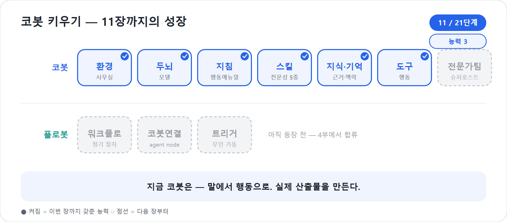

11장. 손발을 달다 — 도구로 행동하게 한다
9장에서 코봇은 스킬이라는 모자를 얻었다. 10장에서는 회사 문서와 업무 맥락을 읽고, 나에 대한 기억까지 붙였다. 이제 코봇은 “사내 워크숍 기획서 만들어줘”라는 말에 회사 양식으로 꽤 그럴듯한 산출물을 낼 수 있다. 그러나 여기까지의 코봇은 여전히 말과 생각의 세계 안에 있다. 기획서가 텍스트로 완성되어도, 그 내용을 Word 파일로 만들고 SharePoint에 올리고 담당자에게 Teams로 알리는 일은 아직 끝나지 않았다.
이 장에서 다는 능력이 그 마지막 조각, 도구(Tool)다. 도구는 코봇의 손발이다. 코봇이 무엇을 해야 할지 판단하면, 도구는 외부 시스템에서 실제 행동을 수행한다. 신버전 Copilot Studio의 Build 탭에서 Tools and skills 구성요소는 코봇이 사용할 Skill과 Tool을 함께 다룬다. 하지만 둘의 역할은 선명하게 다르다. Skill은 생각하고 만들고, Tool은 행동한다.
2026년 기준 주의
새 에이전트 경험에서는 클래식의 토픽·프롬프트 중심 설명을 그대로 가져오면 안 된다. 이 책에서 Tool은 새 경험의 Build 표면에서 코봇에게 붙이는 행동 능력으로 다룬다. 옛 Prompt 기능은 새 경험의 본문 설계에서는 Skill과 Workflows의 agent node로 대체된 것으로 본다.
도구는 코봇의 손발이다
신입사원을 다시 떠올려 보자. 일을 잘하는 사람은 생각만 하지 않는다. 문서를 만들고, 시스템에 등록하고, 회의 초대를 보내고, 확인 메일을 남긴다. 머릿속 판단이 업무가 되려면 손발이 움직여야 한다. 코봇에게 Tool을 붙인다는 것은 바로 그 손발을 달아주는 일이다.
Microsoft Learn은 Tool을 에이전트가 외부 시스템과 상호작용하게 하는 구성요소로 설명한다. 예를 들어 Outlook 커넥터(Outlook·Teams에 바로 붙는 준비된 손발)로 메일을 보내고, Teams에 메시지를 게시하고, Dataverse 데이터를 읽고 쓰고, 날씨 API를 호출하는 식이다. 새 경험의 오케스트레이터는 사용자 요청과 현재 맥락, 도구의 이름·설명·입출력을 보고 어떤 도구를 쓸지 판단한다.
여기서 도구의 설명은 Skill의 description만큼 중요하다. “메일 보내기”보다 “완성된 프로젝트 상태보고서를 지정된 이해관계자에게 HTML 메일로 발송할 때 사용”이 좋다. 도구 설명이 흐리면 코봇은 잘못된 손발을 움직인다. 특히 비슷한 도구가 많아지면 이름과 설명만으로도 품질 차이가 난다.
도구의 종류를 카드처럼 이해하기
도구의 종류는 많지만, 입문자는 카드 몇 장으로 생각하면 충분하다. 코봇이 어떤 외부 세계를 만나는지에 따라 카드를 고른다.
| 도구 카드 | 맡기는 일 | 예시 |
|---|---|---|
| 기성 커넥터 | Microsoft 365와 SaaS의 특정 행동 | Outlook 메일 발송, Teams 메시지 게시, SharePoint 파일 작업, Dataverse 레코드 처리 |
| Custom connector / REST API | 사내 전용 시스템이나 자체 API 호출 | 사내 프로젝트 관리 API에 프로젝트 등록, 예산 시스템에서 코드 조회 |
| MCP(Model Context Protocol) | 여러 도구와 리소스를 묶어 동적으로 제공 | Dataverse MCP로 테이블 조회·설명·쿼리, Work IQ Mail/Calendar/Teams MCP로 업무 맥락 활용 |
| Workflows | 정해진 절차를 도구처럼 호출 | 승인 요청 생성, 파일 저장 후 알림 발송, 반복 점검 절차 실행 |
| Computer use | API가 없는 화면을 조작하는 미리보기 방식 | 레거시 웹앱에 로그인해 버튼 클릭·값 입력. 2026년 기준 미리보기로 신중히 사용 |
이 목록에서 일부 이름은 익숙하고 일부는 낯설다. 커넥터는 Power Platform 세계에서 오래 쓰인 손발이다. MCP는 최근 강조되는 표준 연결 방식이다. Workflows는 4부에서 본격적으로 다룰 플로봇이며, 이 장에서는 “코봇이 부를 수 있는 도구”로만 다룬다. Computer use(사람처럼 화면을 클릭·입력해 조작하는 미리보기 기능)는 API조차 없는 시스템을 다룰 수 있는 가능성을 열지만, 보안·감사·안정성 검토가 특히 필요하다.
함정
새 경험에서 “프롬프트 도구로 요약하면 되겠지”라고 말하면 클래식 사고방식과 섞이기 쉽다. 요약·작성·분류처럼 생각의 절차는 Skill로 가르치고, 워크플로 중간에서 모델 판단이 필요한 부분은 4부의 agent node로 다룬다. 이 장의 Tool은 외부 행동과 연결을 중심으로 이해한다.
더 보기 — 도구 유형의 전체 카탈로그와 “무엇을 할 때 무엇을 고르나” 선택 가이드는 부록 E의 E6·E7에 있다. 새로 추가되는 커넥터·도구 종류는 컴패니언 사이트의 「붙일 수 있는 도구」에서 확인한다.
코봇 한마디
"저는 손발을 한 번에 다 쓰지 않아요. 메일·파일·API·플로봇처럼 만나는 외부 세계가 무엇인지 보고 맞는 도구 카드를 고릅니다!"
무엇을 언제 고르나 — 도구 선택 한눈에
| 이럴 때 | 먼저 고를 도구 | 한 줄 이유 |
|---|---|---|
| Microsoft 365·SaaS의 정해진 행동이 필요할 때 | 기성 커넥터 | Outlook 메일, Teams 메시지, SharePoint 파일처럼 이미 준비된 손발은 새 API를 만들 필요가 없다. |
| 사내 전용 시스템이나 자체 API를 호출해야 할 때 | Custom connector / REST API | 예산 시스템, 교육 신청 시스템, 프로젝트 관리 API처럼 회사 안의 별도 문을 직접 잇는다. |
| 여러 도구와 자료를 묶어 상황에 맞게 골라 쓰게 할 때 | MCP(Model Context Protocol) | 서버가 도구·리소스의 이름, 설명, 입력, 출력을 함께 제공하므로 코봇이 동적으로 판단하기 쉽다. |
| 순서가 중요하고 늘 같아야 하는 절차를 실행할 때 | Workflows(플로봇) | 승인 요청, 파일 저장 후 알림, 반복 점검처럼 흔들리면 안 되는 절차는 플로봇으로 고정한다. |
| API가 없는 레거시 화면을 조작해야 할 때 | Computer use | 사람처럼 클릭·입력할 수 있지만 2026년 기준 미리보기이므로 보안·감사·안정성을 먼저 검토한다. |
도구는 적을수록 좋다
입문자가 가장 흔히 저지르는 실수는 “이것도 될까 봐” 도구를 잔뜩 붙이는 것이다. 그러나 기능이 겹치는 도구가 열 개 꽂혀 있으면, 코봇은 매 순간 “지금은 어느 걸 써야 하지?”를 새로 고민하느라 흔들린다. 만드는 사람조차 어느 도구를 써야 할지 헷갈리는 도구함이라면, 코봇은 더더욱 못 고른다. 비대한 도구함은 에이전트가 실패하는 가장 흔한 이유 중 하나다. 그러니 “있으면 좋은” 도구가 아니라 목적마다 꼭 필요한 최소한의 도구만 또렷한 이름·설명과 함께 남겨라. 도구를 줄이는 것은 기능을 깎는 게 아니라, 코봇의 판단을 또렷하게 만드는 일이다.
만드는 Skill, 행동하는 Tool
이 장의 핵심은 9장에서 예고한 약속을 이행하는 것이다. Skill은 산출물의 논리와 형식을 만든다. Tool은 그 산출물을 받아 실제 세계에 반영한다. 같은 “일정표”라도 역할이 갈린다.
| 요청 | Skill이 맡는 부분 | Tool이 맡는 부분 |
|---|---|---|
| “일정표 만들어줘” | 작업 분해, 선후 관계, 마일스톤, 담당자 초안 | 없음. 대화 안에서 표로 보여주면 충분 |
| “일정표 만들어 파일로 저장해줘” | 일정표 내용을 생성 | Excel/Word 파일 생성, SharePoint 업로드 |
| “완성되면 PM에게 알려줘” | 알림 문구 초안 | Outlook 또는 Teams 커넥터로 발송 |
| “승인 요청까지 올려줘” | 승인 요청 요약 | Workflows로 승인 절차 실행 |
| “프로젝트 대장 상태를 진행 중으로 바꿔줘” | 변경 사유 정리 | Dataverse 또는 사내 API로 레코드 업데이트 |
우리 코봇으로 직접 그려 보자. 사용자가 말한다.
“다음 달 80명 워크숍 일정표를 만들고, 회사 템플릿 파일로 저장해서 PMO 채널에 올려줘.”
코봇은 먼저 schedule-designer Skill을 꺼낸다. 기획서의
범위를 주요 작업으로 나누고, 장소 예약·강사 섭외·참석자 안내·자료
제작·만족도 설문 같은 작업을 일정표로 만든다. 여기까지는 Skill의 세계다.
이어 Tool이 움직인다. 문서 생성 도구가 일정표를 회사 템플릿의 Excel
파일로 만들고, SharePoint 도구가 프로젝트 폴더에 저장하고, Teams 도구가
PMO 채널에 “초안 업로드 완료” 메시지를 남긴다. 이제 일이 끝났다.
이 차이를 흐리면 위험해진다. Skill 본문에 “Teams에 보내라”고 써놓는다고 해서 실제 메시지가 안전하게 전송되는 것은 아니다. 발송에는 연결, 인증, 권한, 실패 처리, 감사 기록이 필요하다. 그런 것은 Tool과 Workflows의 세계다.
Build 탭에서 도구를 붙이는 흐름
새 경험의 화면은 빠르게 다듬어지고 있지만, 사고 흐름은 안정적이다. 코봇에게 Tool을 붙일 때는 다음 순서로 생각한다.
- 코봇을 열고 Build 탭으로 간다.
- Tools and skills 구성요소에서 Tools 영역을 연다.
- Add tool을 선택한다.
- 도구 유형을 고른다. 기성 커넥터, MCP, REST API, Custom connector, Workflows 등이 후보가 된다.
- 연결을 만든다. 필요한 경우 사용자 또는 작성자 자격 증명으로 인증한다.
- 도구의 Name과 Description을 구체적으로 쓴다.
- 입력값을 어떻게 채울지 정한다. 코봇이 대화 맥락에서 동적으로 채우게 할 수도 있고, 고정값이나 변수로 지정할 수도 있다.
- 실행 전 사용자 확인이 필요한지 정한다.
- 실행 후 응답 방식을 정한다. 도구 결과를 코봇 답변에 섞을지, 정해진 메시지나 카드로 보여줄지 결정한다.
- Preview에서 도구 호출 과정과 결과를 확인한다.
Microsoft Learn의 Tool 구성 설명에서 특히 봐야 할 항목은 세 가지다. 첫째, Allow agent to decide dynamically when to use the tool이다. 켜두면 오케스트레이터가 상황에 맞춰 도구를 고른다. 둘째, Ask the end user before running이다. 메일 발송, 레코드 변경, 외부 시스템 등록처럼 되돌리기 어려운 행동은 사용자 확인을 받는 편이 안전하다. 셋째, Authentication이다. 도구가 최종 사용자 권한으로 실행되는지, 작성자가 제공한 연결로 실행되는지에 따라 보안 모델이 달라진다.
현장에서
“도구가 왜 자꾸 엉뚱한 때 실행되죠?”라는 문제는 대개 두 곳에서 나온다. 설명이 너무 넓거나, 입력 설명이 불명확한 경우다.send-report-email도구의 설명이 “메일을 보낸다”이면 모든 메일 상황에 끼어들 수 있다. “완성된 프로젝트 상태보고서를 지정된 이해관계자에게 발송할 때만 사용”처럼 좁혀야 한다.
"도구를 붙일 때 이름·설명·입력·확인·인증을 차례로 정해 주세요. 그래야 제가 어떤 손발을 언제 움직일지 안전하게 판단합니다!"
MCP — 도구 상자를 통째로 빌려오는 방식
MCP(Model Context Protocol)는 이름 그대로 모델에게 맥락을 제공하는 연결 방식이다. 일반 API도 호출은 할 수 있다. 그러나 LLM이 안전하게 API를 쓰려면 “이 함수가 무엇을 하고, 입력은 무엇이며, 결과는 어떤 의미인지”를 이해해야 한다. MCP 서버는 도구와 리소스의 이름, 설명, 입력, 출력 정보를 함께 제공한다. 코봇은 이 정보를 보고 어떤 기능을 쓸지 판단한다.
Copilot Studio의 MCP 문서는 현재 MCP tools와 resources를 지원한다고 설명한다. MCP 서버를 에이전트에 추가하면 서버가 제공하는 도구 목록과 리소스를 볼 수 있고, 필요 없는 도구는 끌 수 있다. 모든 도구를 무심코 켜두는 것은 좋지 않다. 예를 들어 Dataverse MCP 서버에 테이블 생성·수정·삭제 같은 강한 권한이 보이면, 코봇에게 꼭 필요한 읽기·쿼리 도구만 남기는 편이 안전하다.
MCP를 붙이는 흐름은 다음과 같다.
- Tools 영역에서 Add tool을 선택한다.
- Model Context Protocol을 고른다.
- 사용 가능한 MCP 커넥터 목록에서 필요한 서버를 선택한다. 예: Dataverse MCP, Work IQ Mail MCP.
- 연결을 인증한다.
- Add and configure를 누른다.
- MCP 서버 설정에서 제공되는 Tools와 Resources를 확인한다.
- 필요 없는 도구를 끄고, 이름·설명을 보강한다.
- Preview에서 실제로 어떤 MCP tool이 호출되는지 확인한다.
코봇의 프로젝트 예제로는 Dataverse MCP가 잘 어울린다.
Project Register 테이블에서 워크숍 예산 한도와 승인 상태를
읽고, 승인 완료 후 상태를 바꾸는 식이다. 단, 읽기와 쓰기는 권한과 위험이
다르다. 처음에는 조회 도구만 켜서 Preview하고, 쓰기 도구는 사용자 확인과
감사 경로를 정한 뒤 추가한다.
커넥터 — 가장 먼저 꺼내는 손발
대부분의 한국 업무 현장에서는 기성 커넥터가 첫 번째 답이다. Outlook 메일, Teams 메시지, SharePoint 파일, OneDrive, Dataverse, Planner 같은 Microsoft 365·Power Platform 연결은 이미 많이 준비되어 있다. “사내 워크숍 보고서를 PM에게 보내기” 같은 요청은 굳이 새 API를 만들 필요가 없다.
커넥터를 도구로 붙일 때는 한 번에 많은 행동을 열어주기보다, 특정 행동
하나를 좁게 구성하는 편이 좋다. 예를 들어 Outlook 전체를 막연히
붙이기보다 send-workshop-status-email처럼 “워크숍
상태보고서를 정해진 수신자에게 보낸다”는 도구를 만든다. 입력은 제목,
본문, 첨부 파일 링크 정도로 제한한다. 수신자를 고정할지, 사용자에게
확인할지, CC를 허용할지 같은 정책도 정한다.
| 설계 질문 | 안전한 기본값 |
|---|---|
| 수신자는 누가 정하나? | 처음에는 고정 수신자 또는 사용자 확인 |
| 본문은 누가 만든다? | reporter Skill이 초안을 만들고 Tool은 발송 |
| 첨부 파일은 어디서 오나? | SharePoint 업로드 결과 링크를 사용 |
| 실행 전 확인이 필요한가? | 외부 발송·승인·삭제는 확인 받기 |
| 실패하면 어떻게 하나? | 오류 메시지를 사용자에게 설명하고 재시도는 Workflows에서 설계 |
REST API와 Custom connector — 사내 시스템의 문을 여는 법
모든 회사 시스템이 Microsoft 365 안에 있지는 않다. 예산 시스템, 교육 신청 시스템, 사내 결재 포털, 자산 관리 시스템처럼 별도 API를 가진 업무 시스템이 많다. 이때는 REST API(다른 시스템에 일을 시키는 표준 연결 통로)나 Custom connector가 필요하다. 둘의 차이를 입문자식으로 말하면, REST API는 특정 API를 직접 잇는 길이고, Custom connector는 조직에서 재사용할 수 있는 정리된 연결 카드에 가깝다.
사내 프로젝트 관리 시스템에 워크숍 프로젝트를 등록한다고 해보자.
API가 POST /projects를 제공한다면 Tool은 프로젝트명, 부서,
시작일, 종료일, 예산 한도, 담당자 같은 입력을 받아 호출한다. 그러나
코봇에게 API의 모든 필드를 자유롭게 맡기면 안 된다. 필수값, 허용값, 날짜
형식, 금액 범위, 승인 전 등록 가능 여부를 명확히 해야 한다.
팁
API 도구의 입력 설명은 개발자 문서보다 더 친절해야 한다.budget보다 “원화 기준 예산 상한. 숫자만 입력하고 부가세 포함 여부는 별도 필드에 적는다”가 낫다. 코봇은 설명을 읽고 사용자에게 필요한 질문을 생성한다.
Copilot에게 OpenAPI를 맡기고 한 번에 등록하기
예전에는 사내 API를 도구로 만들려면 Power Apps에서 커스텀 커넥터를 먼저 만들고 다시 Copilot Studio에서 등록하는 두 화면을 오갔다. 지금은 한 곳에서 끝난다. Add tool → REST API가 OpenAPI 정의(YAML, 어떤 명령을 어떻게 보내는지 적은 API 설명서 파일)만 받으면 백엔드 커스텀 커넥터를 자동으로 만든다. 그리고 그 YAML 작성 자체를 Copilot에게 맡길 수 있다.
- 도구로 만들 API를 정한다(예: 사내 예산 조회 API).
- Copilot에게 “이 API를 OpenAPI 3.0 YAML로 작성해줘”라고 요청해 초안을 받는다.
- 받은 YAML을 사람이 검토한다 — 서버 주소·엔드포인트·파라미터·응답 형식·인증이 맞는지 확인한다.
- Add tool → REST API로 YAML을 붙여 넣는다. 백엔드에 커스텀 커넥터가 자동 생성된다.
- 새로 생긴 도구를 코봇에 추가하고 입력 변수·이름·설명을 다듬는다.
- Preview에서 호출을 확인한다. 도구가 제대로 채택되는지 보려면 테스트 동안 다른 경로(예: 일반 웹 검색)를 잠시 꺼 도구를 강제로 쓰게 할 수도 있다.
핵심은 “어떤 REST API든 같은 흐름으로 도구가 된다”는 것이다. OpenAPI 작성을 Copilot이 거들어 주므로 공공데이터포털이든 사내 시스템 API든 동일하게 옮긴다. 단, 인증이 필요한 API는 키·토큰 처리와 권한 범위를 먼저 정한다.
MCP냐 커스텀 커넥터냐
연결할 서비스에 공식 MCP 서버가 있으면 MCP가 빠르다. 서버 URL 하나로 여러 도구가 한 번에 붙고, 스키마·인증을 서버가 알아서 광고한다. 공식 MCP가 없거나 사내 자체 API라면 REST API/커스텀 커넥터로 직접 등록한다. 어느 쪽이든 도구의 이름·설명이 채택률을 좌우하는 것은 같다.
Workflows — 플로봇을 도구로 부르는 다리
4부의 주인공은 Workflows, 이 책의 말로는 플로봇이다. 그러나 11장에서 먼저 한 가지를 잡아둔다. 코봇은 Workflows를 도구처럼 호출할 수 있다. 이것이 4부로 가는 다리다.
예를 들어 “보고서 파일 생성 → SharePoint 저장 → Teams 알림 → 승인 요청”은 순서가 중요하고 실패 처리도 필요하다. 이런 절차를 매번 코봇의 추론에 맡기면 흔들릴 수 있다. 대신 Workflow로 결정적 절차를 만들고, 코봇은 필요할 때 그 Workflow를 Tool로 부른다. 판단은 코봇, 절차는 플로봇이다.
이때 용어를 조심하자. 이 책에서 플로봇은 2026년 새 Workflows다. 옛 agent flow와 같은 말로 쓰지 않는다. Workflows는 4부에서 통합 비주얼 캔버스, inline node testing, version history, analytics, agent node, intelligent actions까지 차근차근 다룬다. 지금은 “코봇의 손발 중 하나로 정해진 절차를 부를 수 있다”는 연결만 기억하면 된다.
안전한 도구 설계 체크리스트
도구는 행동한다. 그래서 Skill보다 더 엄격해야 한다. 잘못된 Skill은 이상한 문장을 만들 수 있지만, 잘못된 Tool은 잘못된 메일을 보내거나 데이터를 바꿀 수 있다.
| 체크 | 질문 |
|---|---|
| 목적 | 이 도구는 정확히 어떤 한 가지 행동을 하는가? |
| 설명 | 코봇이 언제 써야 하는지 설명만 보고 알 수 있는가? |
| 입력 | 필수 입력, 형식, 허용 범위가 설명되어 있는가? |
| 권한 | 최종 사용자 권한으로 실행할지, 작성자 연결로 실행할지 정했는가? |
| 확인 | 발송·등록·수정·삭제 전 사용자 확인이 필요한가? |
| 최소 권한 | MCP나 커넥터에서 필요 없는 하위 도구를 껐는가? |
| 완료 응답 | 실행 후 코봇이 무엇을 사용자에게 알려야 하는가? |
| 모니터링 | Preview와 Monitor에서 호출 기록을 확인할 수 있는가? |
작은 사례
한 팀은send-email이라는 도구를 만들어 코봇에게 붙였다. 설명은 “이메일을 보낸다”뿐이었다. Preview에서 코봇은 보고서 초안이 완성되기도 전에 메일을 보내려 했다. 도구 이름을send-approved-status-report, 설명을 “사용자가 승인한 프로젝트 상태보고서 최종본을 지정된 이해관계자에게 발송할 때만 사용”으로 바꾸고 실행 전 확인을 켜자 문제가 사라졌다.
같은 요청, 도구가 있을 때와 없을 때
차이는 실제 대화에서 선명하다. 도구가 없는 코봇에게 말해보자.
“워크숍 기획서 만들어서 SharePoint에 올리고 PMO 채널에 알려줘.”
코봇은 이렇게 답할 수 있다.
“기획서 초안은 아래와 같습니다. 이 내용을 복사해 문서로 저장한 뒤 SharePoint에 업로드하고 PMO 채널에 공유하세요.”
도움은 되지만 일이 끝나지 않았다. 이제 도구가 붙은 코봇에게 같은 요청을 해보자.
“워크숍 기획서 초안을 만들었습니다. 회사 템플릿으로 Word 파일을 생성해
프로젝트/2026-워크숍SharePoint 폴더에 저장하겠습니다. 저장 후 PMO Teams 채널에 링크를 공유해도 될까요?”
사용자가 확인하면 코봇은 문서 생성 도구, SharePoint 도구, Teams 도구를 차례로 사용한다. 마지막에는 링크와 실행 결과를 알려준다. 이것이 “답하는 챗봇”과 “일을 끝내는 동료”의 차이다.
"도구가 붙으면 저는 '이렇게 하세요'에서 '제가 해볼게요'로 넘어갑니다. 다만 실제 행동은 되돌리기 어려우니 확인, 권한, 기록을 꼭 챙겨 주세요!"
핵심 정리
| # | 요점 |
|---|---|
| 1 | Tool은 코봇의 손발이다. 외부 시스템에서 파일 생성, 발송, 등록, 조회, 수정 같은 행동을 수행한다. |
| 2 | Skill은 생각하고 만들고, Tool은 행동한다. 일정표의 내용은 Skill, 파일화·업로드·발송은 Tool이다. |
| 3 | 도구 카드는 기성 커넥터, Custom connector/REST API, MCP, Workflows, Computer use로 이해하면 된다. |
| 4 | 새 경험 본문에서 옛 Prompt 도구를 현재 기능처럼 다루지 않는다. 생성형 절차는 Skill과 Workflows의 agent node로 생각한다. |
| 5 | MCP는 여러 도구와 리소스를 설명과 함께 제공한다. 필요 없는 하위 도구는 끄고 최소 권한으로 시작한다. |
| 6 | Workflows는 코봇이 부를 수 있는 결정적 절차이며, 4부에서 플로봇으로 본격적으로 다룬다. |
| 7 | 도구는 실제 행동을 하므로 실행 전 확인, 인증 방식, 입력 검증, 모니터링을 반드시 설계한다. |
자주 묻는 질문(FAQ)
| 질문 | 답변 |
|---|---|
| 스킬만으로 파일을 만들 수 없나? | Skill은 파일 내용을 만들 수 있지만, 외부 저장소에 파일을 생성·업로드하는 행동은 Tool이 맡는다. 일부 런타임이 파일 산출물을 만들 수 있어도 운영 시스템 연동은 Tool로 설계한다. |
| 커넥터가 없는 사내 시스템은? | REST API나 Custom connector로 잇는다. API가 없다면 Computer use나 Workflows를 검토할 수 있지만, 미리보기·보안·감사 제약을 먼저 확인한다. |
| MCP와 커넥터는 무엇이 다른가? | 커넥터는 특정 서비스의 정해진 작업을 연결하는 카드에 가깝고, MCP는 서버가 제공하는 여러 도구·리소스를 설명과 함께 동적으로 노출하는 방식이다. |
| 도구 실행은 누구 권한으로 되나? | 도구 설정에 따라 최종 사용자 권한 또는 작성자 제공 연결을 사용할 수 있다. 내부 데이터와 발송·수정 작업은 권한 모델을 반드시 검토한다. |
| 도구를 많이 붙이면 좋은가? | 아니다. 비슷한 도구가 많으면 오케스트레이터가 고르기 어려워진다. 이름과 설명을 좁히고, 필요 없는 도구는 끈다. 더 커지면 12장의 Connected agents로 분화한다. |
| Workflows는 여기서 끝인가? | 아니다. 이 장에서는 코봇의 도구로 부르는 다리만 놓는다. 새 Workflows의 캔버스, 테스트, 버전, 트리거, agent node는 4부에서 다룬다. |
다음 장에서는
3부에서 코봇은 일하는 법(Skill), 읽을 자료와 기억(Knowledge·Memory), 실제 행동하는 손발(Tool)을 얻었다. 이제 “프로젝트 일정표를 만들고 SharePoint에 올려줘”라는 한 문장을 여러 능력으로 끝까지 처리할 수 있다. 그러나 일이 커지면 한 코봇이 모든 전문성을 혼자 짊어지기 어렵다. 12장에서는 다섯 모자 중 일부를 독립 전문가 에이전트로 분화하고, 코봇이 그들을 연결해 지휘하는 슈퍼호스트로 도약한다.
실습 — 코봇 키우기 11단계: 손발을 달아 행동하게 한다

〔이어받기〕 10장의 근거·기억을 갖췄지만, 코봇은 아직 행동은 못 한다 — 산출물이 텍스트에 머문다. 손발을 단다.
10-a. 문서 생성·업로드 도구를 연결한다.
schedule-designer가 만든 일정표 내용 → 도구가 받아
.docx로 변환 → SharePoint 프로젝트 폴더에 업로드.
10-b. 알림 도구를 잇는다. Outlook 커넥터로 “완료 시 PM에게 알림 메일”을 보낸다.
10-c. 분업을 확인한다. 내용은 스킬, 파일·업로드·발송은 도구 — 추론과 행동의 경계를 직접 본다.
〔성장〕 코봇은 말에서 행동으로. 이제 실제 산출물(SharePoint의 .docx)을 만든다 — 일을 끝내는 동료의 첫 증거. 〔검증 포인트〕 SharePoint 폴더에 일정표 .docx가 올라오고 알림 메일이 도착하면 통과. 이 ‘외부 시스템 호출’ 능력이 4부 플로봇 연결의 토대다.